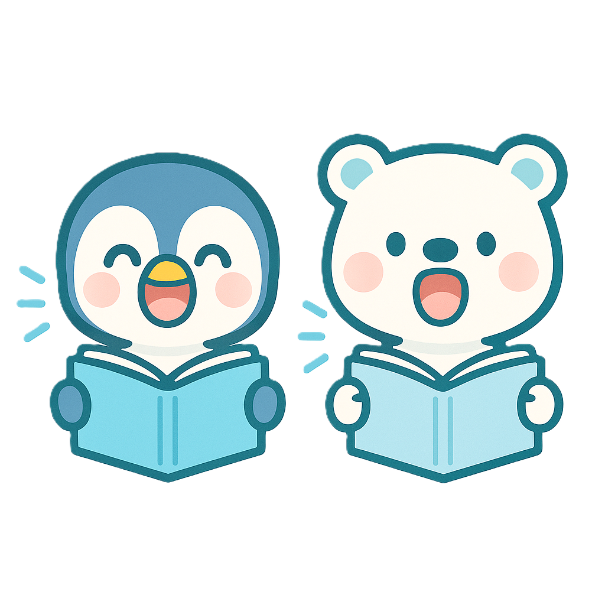
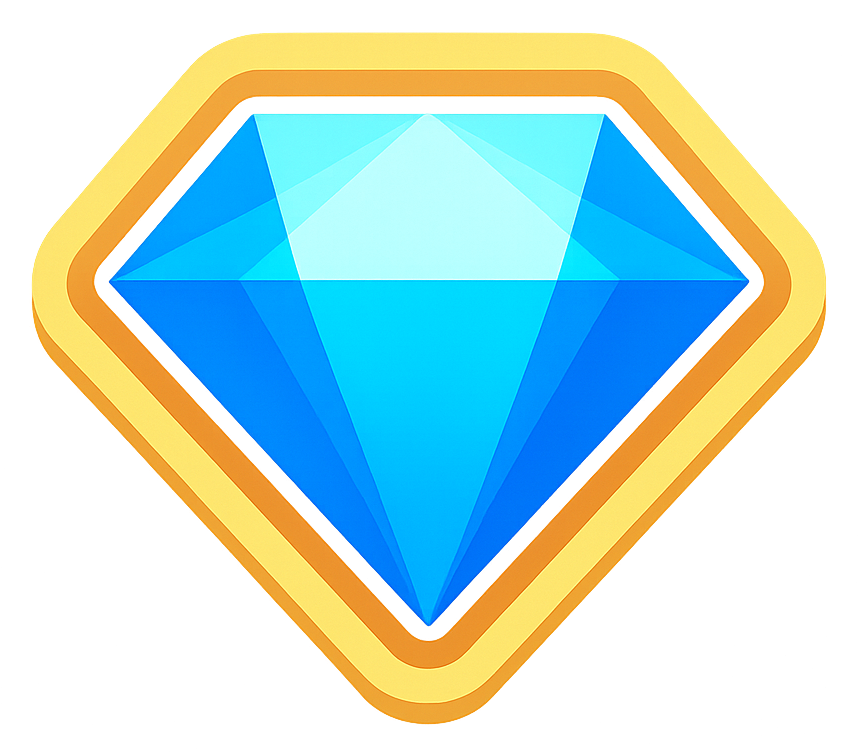
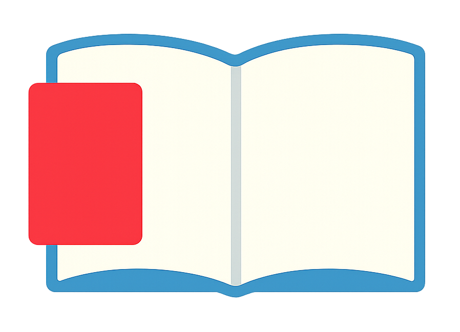

しろくまAIが文章を生成中…
最大30秒かかることがあります
正解！！
音読採点中…

国語力が道をひらく。
ゲスト
9級
🔊総音読回数
0
🏅クリアした文章数
0
獲得した報酬

0
宝石交換所へ
おんどく
音読
トレーニング
ぶんぽう
文法
トレーニング
かんじ・ごい
漢字・語彙
トレーニング
ろんり
論理
トレーニング
音読トレーニング
文法トレーニング
漢字・語彙トレーニング
論理トレーニング
今月の記録
日
月
火
水
木
金
土
🔥5日間続音読にチャレンジ
0
/5日
5日間連続音読でボーナスゲット！
戻る
ホームへ
音読する文章を選ぶ
ラプンツェル
グリム童話
レベル: 初級
音読する
解く
戻る
ホームへ
宝石交換所
0
🍦
アイスクリーム
10
購入
🧸
おもちゃ
25
購入
🍿
おやつ
15
購入
📚
本
20
購入
🎮
ゲーム時間
30
購入
🎬
映画鑑賞
50
購入
オリジナルアイテム
追加
戻る
ホームへ
具体と抽象 基礎編
📖 次の文章を読んで、図を完成させよう
単語カード
抽象（まとめ）
具体（くわしく）
解答する
リセット
戻る
ホームへ
指示語問題 基礎編
次の――線部の指示語が何を指すのか答えなさい。
1/10
解答する
リセット
次の問題へ
結果を見る
ホームへ
音読トレーニング
音読で読解力を向上させよう！
ホームへ
文法トレーニング
GRAMMAR 文法
正しい日本語の文法を身につけよう！
戻る
ホームへ
主語と述語
難易度を選択してください
ホームへ
漢字・語彙トレーニング
漢字の組み合わせで語彙力を向上させよう！
戻る
ホームへ
漢字を選んで組み合わせてください
答えを確認
リセット
次の問題へ
結果を見る
ホームへ
漢字・語彙トレーニング結果
メニューに戻る
戻る
ホームへ
ことわざトレーニング
ことわざを覚えて語彙力を身につけよう！

暗記編
穴抜きをタップして答えを確認
✏️
問題編
穴抜きと意味を選択して回答
戻る
ホームへ
ことわざ暗記編
意味
1 / 10
次のことわざ
戻る
ホームへ
ことわざ問題編
1/10
答えを確認
次の問題
結果を見る
ホームへ
ことわざトレーニング結果
メニューに戻る
ホームへ
🎉
お疲れ様でした！
すべてのことわざを確認しました
もう一度始めから
メニューに戻る
ホームへ
論理トレーニング
LOGIC 論理
論理的思考力を段階的に鍛えよう！
戻る
ホームへ
文法トレーニング
1/3
問題がここに表示されます
次の問題へ
結果を見る
ホームへ
文法トレーニング 結果
メニューに戻る
戻る
ホームへ
問題
1/3
助詞カードを文の（ ）にあてはめて正しい文を作りなさい。
問題文がここに表示されます
助詞カード
解答する
リセット
次の問題へ
結果を見る
戻る
ホームへ
解答する
リセット
次の問題へ
結果を見る
戻る
ホームへ
解答する
リセット
次の問題へ
結果を見る
戻る
ホームへ
解答する
リセット
次の問題へ
結果を見る
戻る
ホームへ
解答する
リセット
次の問題へ
結果を見る
戻る
ホームへ
文節並び替え問題
1/3
文節カードを入力欄にドラッグして、正しい順番に並び替えましょう
並び替え入力欄
文節カード
解答する
リセット
次の問題へ
結果を見る
戻る
ホームへ
文章生成の条件を指定する
難易度を選択
レベル1（小1）
レベル2（小2）
レベル3（小3）
レベル4（小4）
レベル5（小5）
レベル6（小6）
中学受験
文章タイプを選択
物語文
説明文
論説文
ジャンルを選択
自然
科学
動物
植物
偉人
時事
宇宙
恐竜
歴史
環境
SDGs
未来・テクノロジー
社会
福祉
心理
哲学
学び
スポーツ
冒険物語
友情物語
成長物語
家族の物語
挫折物語
ファンタジー
コンピュータ
話題を掘り下げる
掘り下げる
掘り下げない
しろくまAIで文章を生成
ホームへ
1/4ページ
穴埋め問題
答え合わせ
つぎ
確認問題へ
音読完了
まえ
0
問題
1/1
穴埋め問題
答え合わせ
A
100%
とってもよくできました！
閉じる